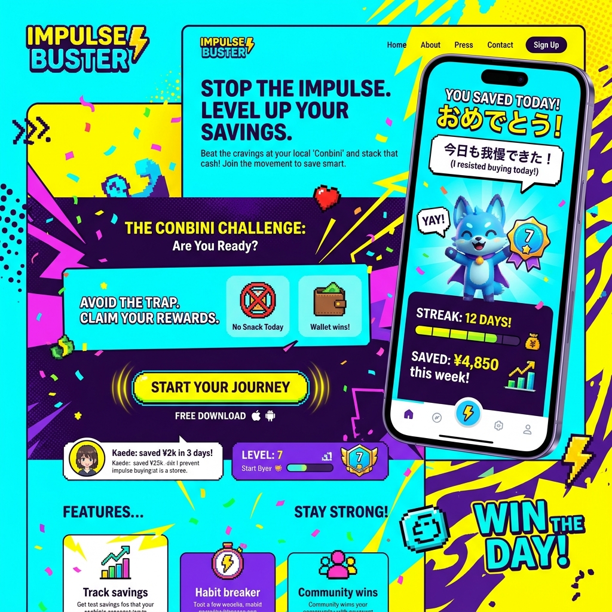

深夜のコンビニを、
完全自動の要塞にする。
人手不足で24時間営業が崩壊の危機に瀕している小売業界。CONVENI-HACKは、既存の店舗に後付けのAIカメラとセンサーを設置し、「深夜の無人営業」と「発注の完全自動化」を実現するリテールハック・ソリューション。

限界を迎えた「気合い」のシフト管理
時給を上げても深夜のアルバイトは集まらず、オーナー自らが徹夜でレジに立つ。この「気合いと根性」に依存したビジネスモデルは既に崩壊しています。テクノロジーによる抜本的な無人化・省人化なしに、店舗の存続はありえません。
既存店舗を止めずに「スマートストア」化
セルフレジ＆ゲート連動システム
大掛かりな改装は不要。入口にスマホ認証ゲートを設置し、深夜帯（24時〜6時）のみ無人営業モードへ切り替え。防犯と利便性を両立します。
AI画像認識による「棚割り」監査
天井のカメラが商品の陳列状態を常に監視。品切れ（欠品）や、商品が乱れている箇所を特定し、日中のスタッフのスマホに「補充指示」をピンポイントで出します。
天気と連動したダイナミック発注
「明日は気温が急に下がるため、おでんと肉まんの需要が200%増加します」。AIが過去の販売データと気象予測を掛け合わせ、廃棄ロスを最小化する発注数を自動提案。
不審行動を検知するセキュリティAI
無人営業の最大の懸念である万引きリスク。CONVENI-HACKのAIカメラは、顧客の「ポケットに商品を入れる」「長時間同じ棚をウロウロする」といった不審な骨格の動きを検知。即座に店内に警告アナウンスを流し、遠隔の監視センターへ通報します。
顧客の動線分析による売上最大化
「ビールを買う人は、おつまみコーナーに何秒滞在しているか」。ECサイトでは当たり前の顧客行動データを、リアル店舗で取得可能に。導線のボトルネックを特定し、レジ横のクロスセル（ついで買い）の配置を科学的に最適化します。
Case Study | 地方都市のフランチャイズ店
深夜シフトを埋めるため、オーナー夫婦が交代で店舗に立ち、過労で倒れる寸前だった店舗。CONVENI-HACKを導入し深夜を完全無人化。人件費を月額40万円削減しつつ売上は維持。オーナーは5年ぶりに家族そろって夜に眠れるようになりました。
コンビニエンス（便利）の原点回帰
「いつでも開いている」という社会インフラとしてのコンビニ。私たちはAIの力で労働集約型のモデルを破壊し、オーナーの健康と消費者の利便性を同時に守り抜きます。